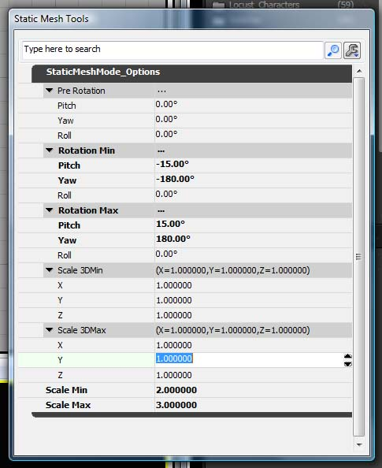
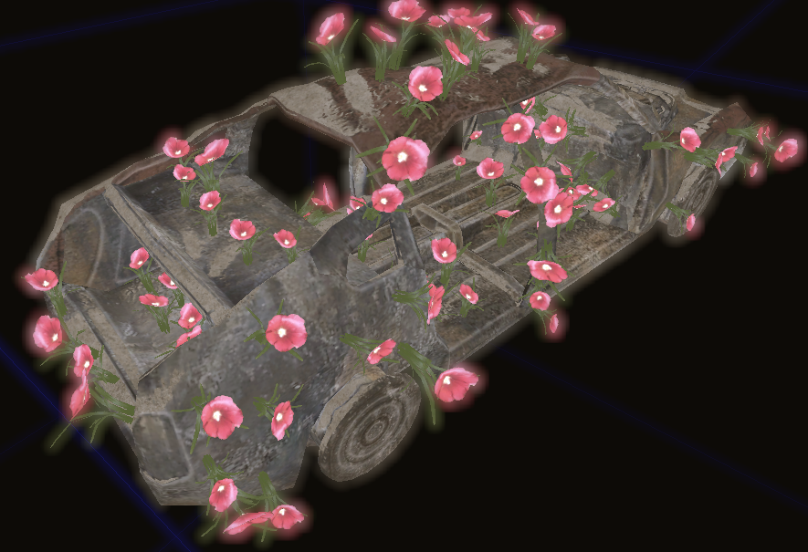

UDN
Search public documentation:
StaticMeshModeCH
English Translation
日本語訳
한국어
Interested in the Unreal Engine?
Visit the Unreal Technology site.
Looking for jobs and company info?
Check out the Epic games site.
Questions about support via UDN?
Contact the UDN Staff
日本語訳
한국어
Interested in the Unreal Engine?
Visit the Unreal Technology site.
Looking for jobs and company info?
Check out the Epic games site.
Questions about support via UDN?
Contact the UDN Staff
静态网格物体模式
概述
使用静态网格物体
开始
进入网格物体模式，点击模式按钮：
属性
一旦您进入到这个模式，将会出现一个浮动的窗口，它内部包含了一些您可以设置的属性。
Pre Rotation(预旋转)
这些旋转值将会在静态网格物体被放置到世界中之前应用到它的上面。这允许您使用那些指向下面的特定坐标轴进行创建的网格物体而不是指向上面的坐标轴的网格物体。可以把它想象成为“Pre Pivot(预支点)”。但它是针对旋转来说的。Rotation Min/Max(旋转量 最小值/最大值)
定义要应用的旋转度的修改范围。比如，如果您正在铺设一片花，您或许会想把RotationMax->Y设置为360度，并设置 min/max Pitch(最小/最大 倾斜度)为-15 和 +15。然后您放置的每个花都会有一个随机的偏离旋转值，同时花也会在一侧或另一侧被稍微平铺一点。Scale 3D Min/Max & Scale Min/Max (缩放 3D最小/最大&缩放 最小/最大)
定义了分别应用到DrawScale3D 和 DrawScale属性的一组范围值。这允许您放置一些彼此在大小上稍微有一些差别的网格物体。在关卡中放置网格物体
有很几种方式可以把网格物体添加到关卡中，但是在这里我们仅讨论对于这个模式来说比较重要的一种。 如果您按下S键并点击3D视口，那么当前选中的静态网格物体将会被添加到关卡中。这个网格物体将不会受到在这个属性窗口中的任何设置的影响。 然而如果您在按下S+点击3D视口的同时按下ALT键，那么静态网格物体将会对齐到您点击的表面上，并且呈现出您在这个属性窗口中设置的属性。示例
 有时候您需要使一辆旧的车看上去再次漂亮起来：
有时候您需要使一辆旧的车看上去再次漂亮起来：
